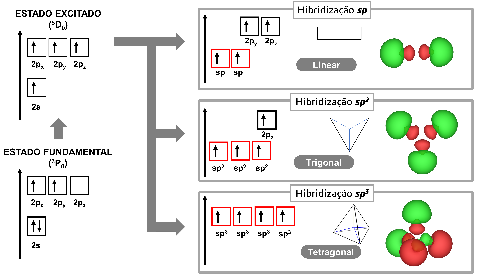
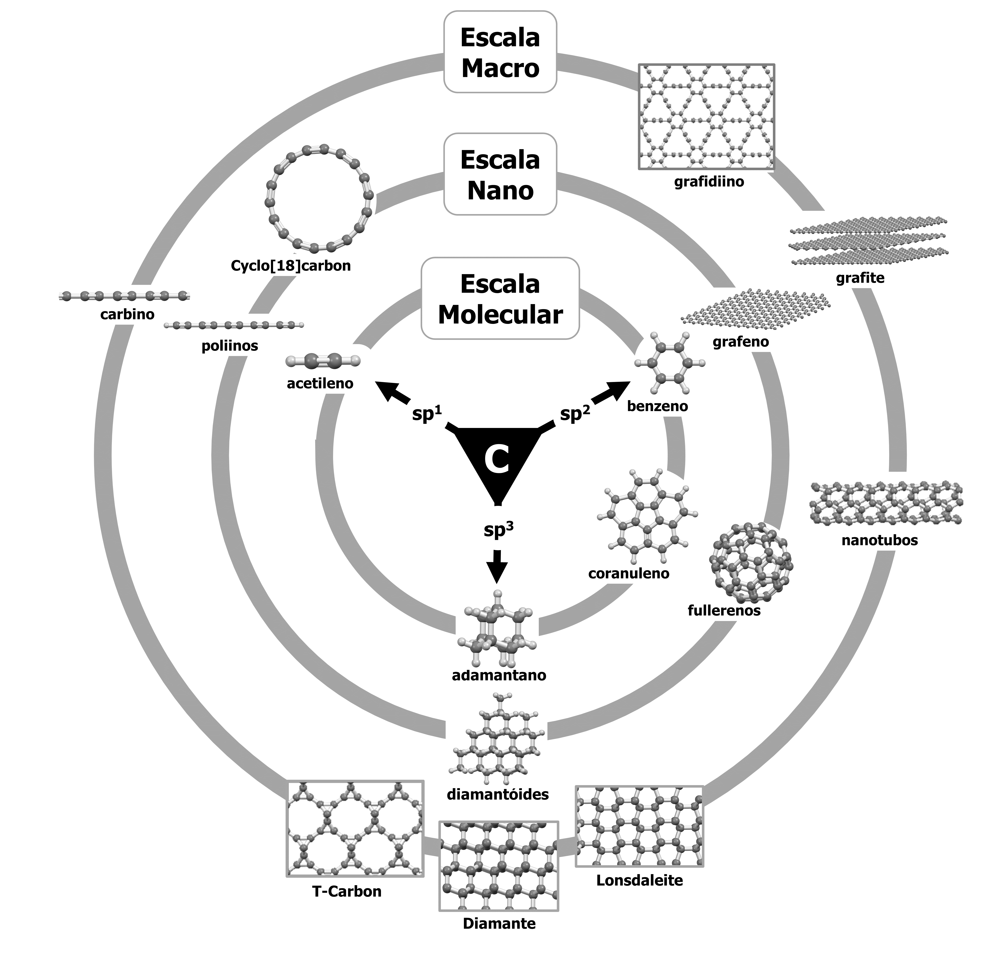
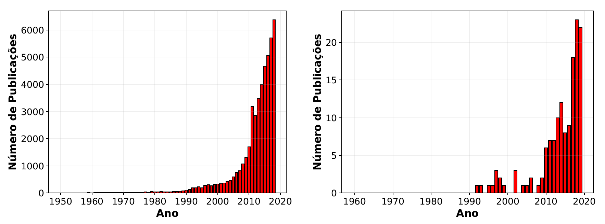

Introdução¶
A vida, como a conhecemos, é totalmente baseada em compostos que são formados estruturalmente por átomos de carbono. A existência de proteínas, DNA, RNA, lipídeos, carboidratos e outras biomoléculas dependem diretamente da capacidade de formação de ligações químicas fortes e estáveis carbono-carbono e de átomos de carbono com outros átomos, tais como hidrogênio, oxigênio e nitrogênio. Esse fato faz com que o carbono seja considerado diretamente responsável por viabilizar a existência de todas as formas de vida conhecidas no planeta terra. [NLC08]
A diversidade estrutural resultante dos diferentes tipos de ligações que o carbono pode fazer resulta em uma miríade de moléculas e estruturas possíveis. Essas estruturas podem apresentar diversas aplicações tecnológicas, abrangendo desde o desenvolvimento de novas moléculas bioativas, como fármacos, até a produção novos materiais sintéticos orgânicos, como polímeros.

Figura 1. Pintura rupestre nas cavernas de Lascaux, França. Um dos primeiros usos conscientes do carbono, na forma de carvão, pela humanidade. Fonte: Saxx, P. Photography of Lascaux animal painting
Apesar de ser somente o sexto elemento mais abundante no universo [Hei91] e o 15\(^\circ\) elemento mais abundante na crosta terrestre [MA80], o carbono é conhecido pela humanidade há milênios. Seu nome deriva da palavra em latim carbo, traduzida como carvão em português, sua principal fonte desde a antiguidade. Um dos primeiros usos conscientes do carbono pela humanidade de que se tem notícia está preservada nas pinturas paleolíticas do complexo de cavernas de Lascaux [LG82], na vila de Montignac localizada no sudoeste da França. Com uma idade estimada de aproximadamente 17.000 anos [LGE79], cerca de 600 pinturas representam principalmente a fauna cotidiana dos humanos da era paleolítica. A Figura 1 adaptada de [sax19], mostra um exemplo de pintura em que é possível notar claramente a utilização de carbono, na forma de carvão, para desenhar os traços dos animais representados.
Ao longo da evolução da humanidade, o carbono começou a adquirir um papel cada vez mais central no desenvolvimento tecnológico. Inicialmente era utilizado somente como fonte de energia na forma dos combustíveis como carvão, gás natural e combustíveis fósseis derivados de petróleo. Entretanto, recentemente passou a chamar atenção como fonte de materiais com propriedades eletrônicas, óticas e mecânicas especiais como nanotubos de carbono, fulerenos e o grafeno.
O átomo de carbono¶
O átomo carbono é composto por 6 prótons, 6 nêutrons e 6 elétrons em sua forma isotópica mais estável 12C, que corresponde a aproximadamente 99% do total de átomos de carbono. Seus outros isótopos se apresentam de maneira muito rara na natureza, sendo o 13C aproximadamente 1% do conteúdo total de átomos e somente traços de 14C compondo aproximadamente 1/\(10^{12}\) de todos os átomos de carbono.
Apesar de sua pouca incidência na natureza, ambos os isótopos apresentam aplicações muito importantes. O 13C é amplamente utilizado em experimentos de ressonância magnética nuclear, por possuir spin nuclear 1/2. O 14C é utilizado para datação histórica de objetos, fósseis antigos ou quaisquer compostos que contenham átomos de carbono, pois como seu tempo de meia vida é de aproximadamente 5700 anos, o que representa um tempo considerável para a história humana, e a taxa de incorporação deste isótopo em materiais biológicos ou feitos pelos humanos é aproximadamente constante. Dessa forma pode-se usar a quantidade de 14C ainda presente em uma amostra para determinar seu tempo de vida.
Em seu estado fundamental, que apresenta termo espectroscópico \(^3\)P\(_0\) [Joh66], seus 6 elétrons se apresentam em uma configuração eletrônica 1s\(^2\)2s\(^2\)2p\(^2\): \(1s\): \(\upharpoonleft \downharpoonright\) \(2s\): \(\upharpoonleft \downharpoonright\) \(2p_x\): \(\upharpoonleft\) \(2p_y\): \(\upharpoonleft\) \(2p_z\)> \(\upharpoonleft\). Nessa forma, somente os elétrons desemparelhados \(2p_x\) e \(2p_y\) estão disponíveis para a formação de ligações químicas e, portanto, cada átomo carbono só poderia, em princípio, fazer no máximo duas ligações químicas.
Entretanto, é necessário somente 1.6 eV para excitar o átomo de carbono para o estado \(^5\)S\(_2\) com configuração 1s\(^2\)2s\(^1\)2p\(^3\): \(1s\): \(\upharpoonleft \downharpoonright\) \(2s\): \(|\upharpoonleft|\) \(2p_x\): \(\upharpoonleft\) \(2p_y\): \(\upharpoonleft\) \(2p_z\): \(\upharpoonleft\), contendo quatro elétrons desemparelhados e, dessa forma, podendo fazer um total de quatro ligações químicas. Como os orbitais 2p (\(2p_x\), \(2p_y\) e \(2p_z\)) são aproximadamente 4 eV mais energéticos do que o orbital 2s (Figura 2), para um átomo isolado é energeticamente mais favorável que dois elétrons ‘’preencham’’ o orbital 2s e os outros 2 ‘’preencham’’ dois orbitais 2p. Na presença de outros átomos, como hidrogênio, oxigênio ou até mesmo outro átomo de carbono, o ganho de energia pela formação de uma ligação química supera a diferença de energia entre os orbitais 2s e 2p, fazendo com que essa alteração em sua estrutura eletrônica seja energeticamente favorecida.
Hibridizações do carbono¶

Figura 2. Representação esquemática da formação de orbitais híbridos do carbono.
As considerações energéticas explicam o fato de o carbono conseguir fazer 4 ligações, apesar de o estado fundamental do átomo isolado apresentar somente dois elétrons desemparelhados. Entretanto, ainda há dois tipos de orbitais diferentes, \(s\) e \(p\), que resultarão na formação de dois tipos de ligações diferentes. Entretanto, dados experimentais mostram que as ligações químicas em moléculas como o metano (CH4}) apresentam exatamente a mesma energia. Além disso, a formação de ligações dos orbitais \(s\) do hidrogênio com os orbitais \(s\) ou \(p\) do carbono não poderiam gerar uma molécula com geometria tetraédrica, como é a apresentada por essa molécula.
Outro fator importante que deve ser levado em consideração é que a transição \(^3\)P\(_0 \rightarrow ^5\)S\(_2\) é proibida segundo as regras de seleção\footnote{Somente transições eletrônicas com \(\Delta J = 0, \pm 1\) e \(\Delta S = 0\) são permitidas, onde \(\Delta J\) e \(\Delta S\) são as variações de momento angular total e spin total}. Todos estes detalhes fazem com que um novo modelo deva ser proposto para explicar os dados experimentais observados.
Um modelo desenvolvido para explicar esses fenômenos foi proposto em 1931 por [Pau31], conhecido como modelo de orbitais híbridos. Esse modelo prevê que os orbitais \textit{s} e \textit{p}, que podem ser representados no formalismo quanto-mecânica na forma \(|2s\rangle\), \(|2p_x\rangle\), \(|2p_y\rangle\) e \(|2p_z\rangle\), podem se combinar linearmente para formar um estado sobreposto, chamado de estado híbrido. Nesse processo, um estado \(|2s\rangle\) pode se combinar com \(n\) estados \(|2p_j\rangle\), sendo \(n\)=1, 2 ou 3, formando orbitais híbridos do tipo \(sp^n\), como esquematizado na \autoref{carbon_hibrid}.
Hibridização sp¶
Um átomo que possui orbitais \(|2s\rangle\) e \(|2p\rangle\) pode combinar linearmente estes orbitais para formar novos orbitais híbridos na forma
Quando ocorre a combinação de um orbital \(2s\) com um orbital \(2p\), o resultado é a formação de dois orbitais híbridos \(sp\), \(\phi_1\) e \(\phi_2\), com ângulos de 180\(^\circ\) em uma formato linear, como mostrado na \autoref{carbon_hibrid}. Após a formação dos orbitais híbridos \(sp\) ainda restam dois orbitais do tipo \(p\), possibilitando assim formação de duas ligações \(\sigma\), resultando da sobreposição frontal dos orbitais \(sp\) com orbitais de outro átomo, e duas ligações \(\pi\), resultando da sobreposição lateral destes orbitais com os orbitais \(p\) de outro átomo. Consequentemente, pode ocorrer a formação ou de uma ligação tripla, como a apresentada pelo acetileno, ou duas ligações duplas, como apresentada em cumulenos.\footnote{É importante ressaltar que aqui e ao longo de toda esta dissertação as denominações de ligações \(\sigma\) e \(\pi\) estão sendo usadas para se referir às ligações formadas por sobreposição frontal e lateral dos orbitais, respectivamente, e não para se referir à sua definição estrita como sendo o valor da projeção do momento angular no eixo da ligação.}
Hibridização sp2¶
Os orbitais \(|2s\rangle\) e \(|2p\rangle\) também podem ser combinados para formar novos orbitais híbridos na forma
Os três primeiros orbitais, \(\phi_1\), \(\phi_2\) e \(\phi_3\), apresentam uma distribuição espacial trigonal e ângulos intrínsecos de 120\(^\circ\), como mostrado na Figura 2, podendo formar três ligações \(\sigma\). O orbital \(\phi_4\) aponta para a direção perpendicular ao plano \(xy\), e pode formar uma ligação \(\pi\). Como esses orbitais são compostos por um estado \(s\) e 2 estados \(p\) cada, recebem o nome de orbitais híbridos \(sp^2\). Esses orbitais apresentam a mesma energia (\(\epsilon_s + 2\epsilon_p\))/3, onde \(\epsilon_s\) e \(\epsilon_p\) são as energias dos estados \(s\) e \(p\) respectivamente.
Hibridização sp3¶
Os orbitais \(|2s\rangle\) e \(|2p\rangle\) também podem ser combinados na forma
Esses novos estados formados recebem o nome de \(sp^3\), pois são formados pela combinação de 1 orbital \(s\) com 3 orbitais \(p\). Esses orbitais apontam do centro para os vértices de um tetraedro, como mostrado na \autoref{carbon_hibrid}, com ângulos intrínsecos de 108\(^\circ\) e apresentando todos a mesma energia de (\(\epsilon_s + 3\epsilon_p\))/4, podendo formar quatro ligações \(\sigma\).
Formas Alotrópicas do Carbono¶

Figura 3. Representação geral das diversas estruturas que podem ser formadas a partir da combinação carbonos com diferentes hibridações.
Alótropos são definidos como os vários arranjos estruturais de um único elemento [MW97]. Graças à diversidade estrutural possibilitada pela formação de orbitais híbridos, o carbono possui uma quantidade muito grande de estruturas alotrópicas relatadas. Existe uma quantidade relativamente grande de alótropos de carbono já observados experimentalmente, como por exemplo: grafite, diamante, Lonsdaleite, nanotubos, fulerenos, grafeno, carbino, entre outras. Essas formas e sua ligação com a hibridização estão representadas na [carbon_alotropes] (Fonte: Adaptado de [ST17]).
Além das que já foram observadas experimentalmente, há uma diversidade grande de estruturas hipotéticas já estudadas. De acordo com o banco de dados Samara Carbon Allotrope Database (SACADA) em 2019 já existiam mais de 500 estruturas, hipotéticas ou observadas experimentalmente, relatadas [HKGP16]. A Figura 3 apresenta os alótropos de carbono obtidos experimentalmente agrupados pela hibridação dos átomos que os constitui. É interessante notar que algumas estruturas como Cyclo[18]carbon, fulerenos e nanotubos apresentam átomos com geometria intermediária entre as canônicas \(sp^n\), mostrando que apesar de explicar satisfatoriamente grande parte dos dados experimentais a teoria de hibridação de Pauling não deve ser tomada como absoluta e ainda apresenta espaço para ser melhorada.
A observação experimental do fulereno em 1985 por Kroto et al. [KHOBrien+85], dos nanotubos de carbono em 1991 por Ijima [Iij91] e do grafeno em 2004 por Novoselov et al. [NGM+04] iniciou uma era sem precedentes de descobertas e proposições de novos alótropos de carbono. Essas descobertas foram tão impactantes que renderam o prêmio Nobel de Química em 1996[Pra97] para Robert F. Curl, Sir Harold W. Kroto e Richard E. Smalley pela observação dos fulerenos e o prêmio Nobel de Física em 2010 [Ger10] para Andre Geim e Konstantin Novoselov pela descoberta do grafeno, antecipando a grande importância que este material teria no desenvolvimento da ciência e tecnologia futura.
Juntas, essas descobertas encorajaram pesquisadores das diversas áreas da ciência a buscar tanto a observação experimental quanto a predição teórica de novos alótropos de carbono que apresentem propriedades óticas, eletrônicas e mecânicas excepcionais [Tay92], fazendo com que muitos considerem esse momento como a “Era dos alótropos de carbono” [Net10,Hir10].
 Figura 4. Número de publicações contendo o termo “carbon allotrope” no artigo à esquerda e no título à direita. Fonte: Google Scholar acessado em 10/01/2020
De fato, uma busca por artigos publicados em periódicos científicos com revisão por pares pelo termo “carbon allotrope”, apresentada na Figura 4, mostra um crescimento exponencial por menções à esse tema indicando sua crescente relevância acadêmica. É possível notar também que o número de publicações que apresentam esse termo no título, como é comum para artigos que apresentam novos alótropos de carbono, apresenta uma quantidade bem pequena. Isso indica que apesar do interesse muito grande em alótropos de carbono, o número de novas estruturas relatadas é relativamente pequeno.
Recentemente a observação experimental do cyclo[18]carbon por Kaiser et al. [KSS+19] em 2019 trouxe uma nova onda de interesse em materiais formados somente por átomos de carbono. Essa forma alotrópica já havia sido predita por Diederich e Rubin [DR92] em 1992, que também apresentaram uma possível rota sintética para sua obtenção. Vinte e sete anos depois essa rota sintética proposta foi utilizada para trazer esse alótropo à realidade, mostrando o poder e a importância que cálculos teóricos possuem na descoberta de novas estruturas.
Nesta dissertação será apresentado e explorado o uso de cálculos teóricos de estruturas alotrópicas de carbono, a fim de buscar um entendimento de sua capacidade preditiva e ampliar a gama de materiais formados unicamente por átomos de carbono.